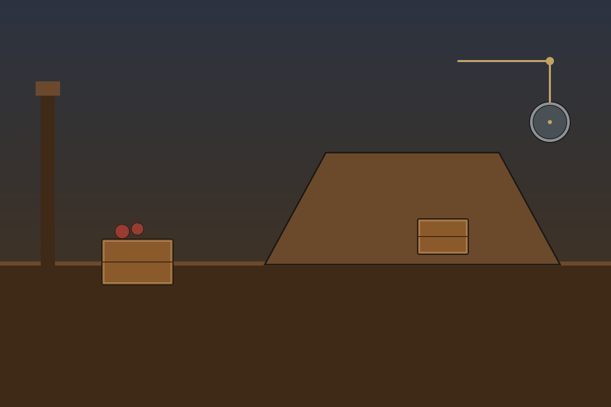

Simple Machine Shop
A November workshop page about force and simple machines. Pick your own track. The two tracks are separate, and Advanced parts are optional.

Grade 2Workshop HelpersLogan's track. Meet the ramp, the wedge, the pulley, and the lever. Optional Advanced adds the wheel and axle, the screw, and a pulley puzzle.Open › Grade 5Machine WorksSavannah's track. All six simple machines, the force-for-distance trade, a workshop hunt, and a loft invention. Optional Advanced compares fixed and movable pulleys.Open ›